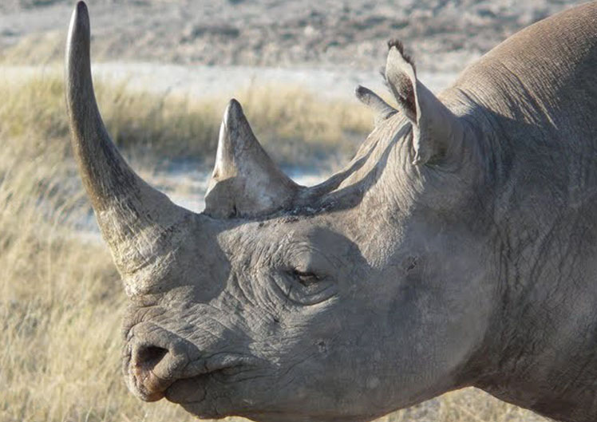
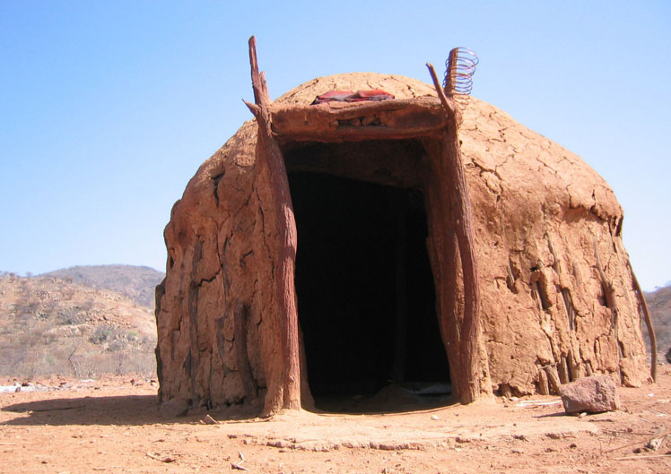
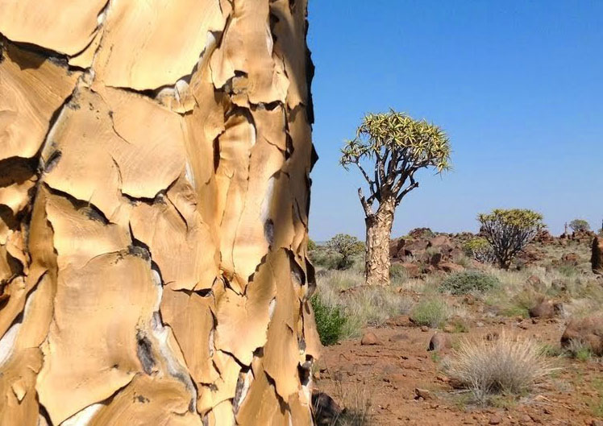
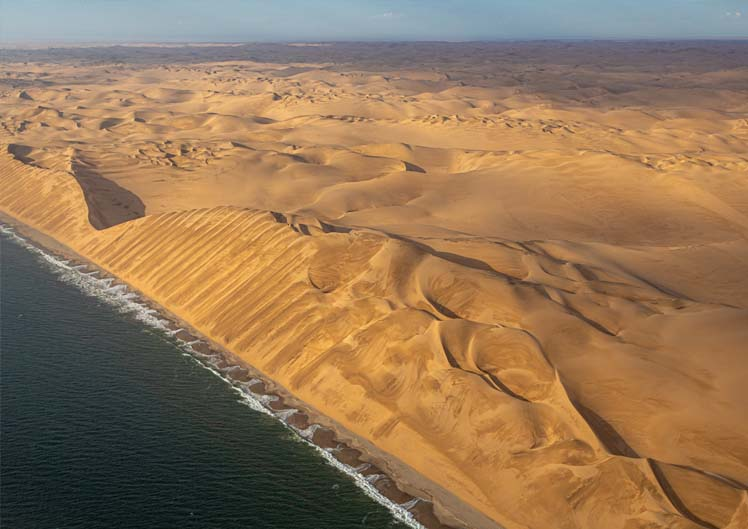
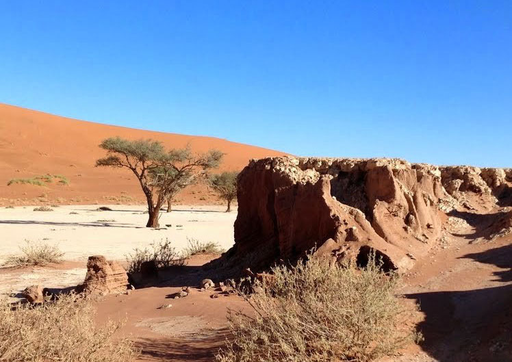

Über Namibia
Was Sie auf Ihrer Namibia-Reise auf keinen Fall verpassen sollten
Ich werde immer wieder gefragt, was man in Namibia unbedingt erlebt haben sollte. Das kommt bei einem so großen und vielfältigen Land natürlich darauf an – welche Erwartungen haben Sie? Und wo legen Sie Ihre Schwerpunkte? Das lässt sich im persönlichen Austausch am besten besprechen. Für Namibia-Neulinge habe ich hier als erste Orientierung ein paar grundsätzliche Empfehlungen zusammen gestellt.
Tiere
Etosha, Mahango, Caprivi
Wenn Sie Ihre Schwerpunkte auf Tiere legen, eignet sich der Norden Namibias, da gibt es den Etosha National Park mit seinen Wasserstellen, an denen die Tiere trinken müssen, ein Magnet für alle Tiere in diesem trockenen Land. Der Park ist sehr groß und weltbekannt, einer der großen berühmten Naturschutzgebiete Afrikas. Weiter im Osten gibt es dann noch den Mahango Park, am Okavango-Fluss gelegen, bevor der Okavango nach Botswana fließt und da im Okavango-Delta versickert. Hier gibt es durch das Wasser bedingt ganz andere Tiere als im übrigen Namibia, eben auch Krokodile, Flusspferde, Büffel und andere Wassertiere.
Noch weiter im Osten, im Caprivi-Zipfel, gibt es noch den kleinen Mudumu Park mit den gleichen Tieren wie im Mahango Park, aber größere Herden von Elefanten und Büffeln.
Wer Wert auf Vögel legt, ist dann an der Spitze vom Zipfel, auf der Impalila Island, gut aufgehoben, denn hier gibt es zur richtigen Jahreszeit tausende von Wasservögeln und gegenüber vom Chobe Park ist es ganz einfach spitze. Man kann sich die schiere Menge der Tier- und Artenvielfalt gar nicht vorstellen, wenn man nicht da gewesen ist. Im Chobe Park (Botswana) leben 70.000 Elefanten! Davon kommen sehr viele zum Fluss runter zum Trinken, das ist am Nachmittag ein wahres Schauspiel.
Fremde Kulturen
Himba, Vambo, Kavango und Caprivi
Im Norden gibt es noch ethnische Gruppen, die bislang ziemlich ungestört ihr traditionelles Leben führen. Im Kaokoland die Himba, die zum Teil noch wie vor hundert Jahren leben. Meine Fotos sprechen für sich selbst und ich kann mit den Himba recht gut umgehen, gleichzeitig ist mir sehr wichtig, dass ein Besuch nicht zur "Trophäenjagd" wird.
Dann ist nördlich des Etosha-Parks das Ovamboland, wo fünfzig Prozent unser Bevölkerung her kommt, es ist dicht besiedelt und interessant. Die Vambo leben zwar schon sehr europäisch, aber trotzdem geht es entlang der Straße sehr afrikanisch zu, mit Tieren am Wegesrand, überall Dörfer und auch Städte. Von der Vegetation ist es auch abwechslungsreich, immer wieder Palmen und in einem Gebiet gibt es ganz viele große Baobabs (Affenbrotbäume).
Am Okavango entlang und im Caprivi-Zipfel geht es noch sehr afrikanisch zu. Transport läuft hier zum Teil noch per Schlitten, ein ausrangiertes Kanu, das von Ochsen gezogen wird. Die Hütten sind mit Gras gedeckt, die Frauen arbeiten per Hand auf dem Acker.
Landschaften und Pflanzen
Die kontinentale Stufe für Landschaft und auch Vegetation
Entlang der kontinentalen Stufe, etwa 100 km parallel zur Küste, ist die Randstufe, wo es von der Wüste ins höher gelegene Inland geht, hier steigt es bis zu 2000 m an. Durch die Berge ist die Landschaft sehr attraktiv und geologisch sehr vielfältig. Es gibt Granit, Sandstein, Basalt, Dolorit, Dolomit und Schiefer, um nur einige geläufige Gesteinsarten zu nennen. Berge beleben die Landschaft und machen diesen Gürtel so attraktiv und abwechslungsreich.
Gerade in diesem Gebiet gibt es eine große Artenvielfalt von speziell angepasster Vegetation, da es in der Wüste bis zum Hochland sehr trocken ist und sich somit eine ganz eigene Pflanzenwelt entwickelt hat, viele endemische Pflanzen. Hier gibt es die Köcherbäume, Welwitschia, Balsambäume und Sträucher und natürlich auch Akazien und eine Vielfalt anderer Bäume und Sträucher. Es ist sehr interessant, wie die Pflanzen sich an diese lebensfeindlichen Bedingungen angepasst haben, jede Sorte auf ihre eigen Art und Weise mit anderen Mitteln und Techniken (kann ich Ihnen gern vor Ort erklären).
Wasser und Wüste
Swakopmund und Walvis Bay, Cape Cross mit seinen Robben; die Dünen am Sossusvlei
An der Küste wird eine Vielfalt von Aktivitäten angeboten, Quadbike-Touren (geführte Touren durch die Dünen, ein bis zwei Stunden mit kleinen vierrädrigen Motorrädern), Duneboarding und Dünenrutschen, Bootsfahrten oder Segelturns in der Bucht von Walvis Bay, hier hat man die Möglichkeit Robben und Delphine zu sehen, während man frische Austern probiert und Sekt kredenzt bekommt. In Walvis Bay ist die Lagune für seine vielen Vögel und besonders die vielen Flamingos bekannt.
Rundflüge zu den Dünen von Sossusvlei sind sehr beliebt, dauert 2,5 Std. in einer kleinen Cessna, die maximal 5 Personen mitnimmt. Es können auch Angeltouren organisiert werden, vom Ufer (Brandungsangeln) oder auch vom Boot aus.
Das Swakopmund Museum ist einen Besuch wert, ebenso das Aquarium, in dem Sie mehr über den Atlantik erfahren. Die Architektur in Swakopmund ist geprägt von alten Gebäuden aus der Kolonialzeit bis hin zum Neokolonialstil, um sich dem alten Stadtbild etwas anzupassen. Es gibt jede Menge Läden, die auf Touristen zugeschnitten sind, man kann sich Webteppiche nach Maß schneidern lassen, Bettwäsche mit afrikanischen Motiven fertigen lassen und alles kann von den Herstellern verschickt werden, damit Ihr Gepäck nicht überlastet wird. Auch an Schmuck gibt es eine große Auswahl, besonders mit unseren heimischen Edelsteinen.
Swakopmund ist kein Badeort, das Wasser ist meist zu kalt zum Baden, da eignet sich höchstens die Zeit von Januar bis April. Swakopmund ist wohl die deutscheste Stadt in Afrika. Man sagt auch, es ist der südlichste deutsche Kurort, da ist was dran, ich lebe hier sehr gern. Spaziergänge am Atlantik können sehr schön sein. Einer meiner Gäste möchte sogar mal einen Monat herkommen, sich eine Wohnung mieten und einfach nur hier in Swakopmund Urlaub machen.
Auch kulinarisch hat Swakopmund viel zu bieten, in erster Linie Meeresfrüchte aller Art. Aber auch Steaks von namibischen Antilopen und natürlich auch vom namibischen Rind stehen auf jeder guten Speisekarte.
Die Robbenkolonie bei Cape Cross ist sehr interessant, hier leben in Hochzeiten bis zu einer viertel Millionen Robben, leider stinkt es hier sehr stark, aber zum Glück gewöhnt sich die menschliche Nase sehr schnell dran.
 Entlang der Küste ist ein Gürtel mit Wüsten, der etwa 100 km weit ins Inland reicht. Da ist die Mondlandschaft bei Swakopmund zu erwähnen. Dieses Gebiet besticht durch seine Steinwüste und geologische Vielfalt (z.B. die 'klingenden Steine'). Auch die Kieswüste mit der weiten Sicht ist sehr interessant. Dann gibt es natürlich noch die Sandwüste, die aus den Dünen besteht, die beim Sossusvlei ihren Höhepunkt haben. Hier ragen die Dünen bis zu 250 m über die Kieswüste empor und besonders zu den frühen Morgenstunden, wenn noch Schatten fallen, gibt es die bekannten Bilder der Dünenlandschaft.
Wie hilfreich sind diese Tipps für Sie? Haben Sie noch offene Fragen? Mailen Sie mir!
Häufig gestellte Fragen (FAQ)
Wie ist das Klima?
Da Namibia das trockenste Land südlich der Sahara ist, ist es hier eigentlich zu jeder Jahreszeit gut auszuhalten. Es ist selten schwül. Die Regenschauer fallen meist im Februar und März und sind stark und kurz, danach scheint die Sonne bald wieder.
Wann ist die beste Reisezeit?
Jede Jahreszeit hat ihren Reiz. Der Mai ist auch hier Wonnemonat, Regen ist vorbei, es wird kühler, Mücken verschwinden. Unser Winter (Juni bis Mitte September) ist im Gegensatz zum europäischen Sommer beständiger, es regnet nicht, die Sonne scheint 10 Stunden, es ist nie heiß oder schwül. Wenn das kein schönes Wetter ist! Ab Mitte September wird es plötzlich heiß, aber durch die geringe Luftfeuchtigkeit ist es auszuhalten.
Wie sicher ist es in Namibia?
Namibia zählt zu den sichersten Ländern des Kontinents. Aber trotzdem muss man vorsichtig sein und z.B. keinen teuren Schmuck offen tragen oder Handtaschen, Kamaras und Handys im Auto zurücklassen. Wer mit offenen Augen und aufmerksam unterwegs ist, sollte keine Probleme bekommen. Der gesunde Menschenverstand ist gefragt.
Welche Einreisebedingungen gibt es zu beachten?
Der Reisepass muss noch mindestens 6 Monate gültig sein nach Ihrem Abreisedatum in Namibia. Es müssen mindestens zwei Seiten im Reisepass komplett leer sein, damit Platz für die Stempel ist. Da sich die Corona-Regeln immer wieder ändern, am besten beim Auswärtigen Amt die aktuellen Reisehinweise nachlesen.
Gibt es Non-stop-Flüge nach Namibia?
Es gibt wieder Flüge mit einer neuen Lufthansa-Tochtergesellschaft namens Eurowings Discover 5x die Woche nonstop von Frankfurt nach Windhoek und zurück.
Was sollten wir nicht vergessen einzupacken?
Muss ich alles Geld in bar mitbringen?
Nein, Sie können fast überall mit Visa- und Master-Kreditkarte zahlen und Sie können auch aus den Automaten Bargeld ziehen, wenn Sie Ihre PIN kennen. Sonst sind Euro gut, am Windhoeker Flugplatz bekommt man den besten Wechselkurs, bloß nicht in Europa Namibia-Dollar (NAD) bestellen. Der südafrikanische Rand ist mit dem NAD 1:1 wechselbar und hier in Namibia können Sie auch mit SA-Rand zahlen, es ist hier eine gültige Währung.
Gibt es gute Getränke in Namibia?
Ja, wir haben gute südafrikanische Weine und das namibische Bier ist nach dem Deutschen Reinheitsgebot gebraut, alles „erste Sahne“. Getränke sind überall erhältlich, in Supermärkten und an Tankstellen. Ein Liter Wasser kostet 1€, südafrikanischer Wein kostet im Restaurant zwischen 10 bis 20€, ein Bier kostet im Restaurant etwa 1,50€. Das Wasser aus der Leitung ist in den meisten Lodges gut zu trinken.
Kann man alles essen?
Ja, auch Salat, Obst und Gemüse. Hygiene wird hier groß geschrieben. Unser namibisches Fleisch ist besonders gut und unbelastet, da die Tiere frei auf den Farmen weiden, keine Stallhaltung und Mast.
Müssen wir Vorsorge gegen Malaria treffen?
Die Anopholis-Mücke ist hauptsächlich in den Regenmonaten unterwegs, Februar bis Ende Mai, danach ist es ziemlich sicher. Ich lebe hier nun schon seit über 50 Jahren und nehme nichts ein, weil die Medikamente mir auf Dauer mehr schaden würden. Aber wenn Sie einmal alle paar Jahre in so ein Gebiet kommen, ist es was anderes, und vielleicht fühlen Sie sich einfach sicherer, dann bitte. Man kann auch andere Maßnahmen treffen: Helle lange Kleidung - Mücken lieben dunkle Farben, Deostift oder Spray (Marke “Tabard”, gibt es hier im Land auf unsere Mücken abgestimmt), Vitamin-B-Tabletten. Kein Parfüm, das lieben Mücken.